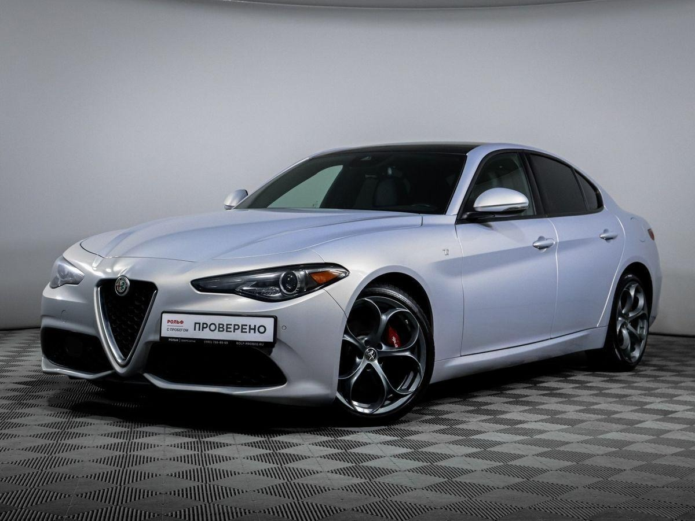
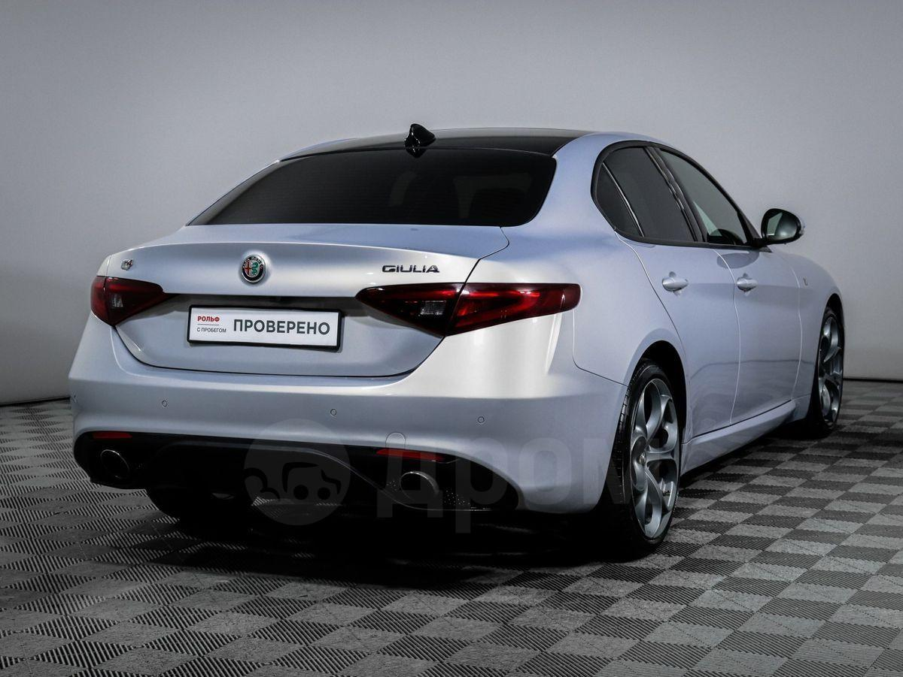
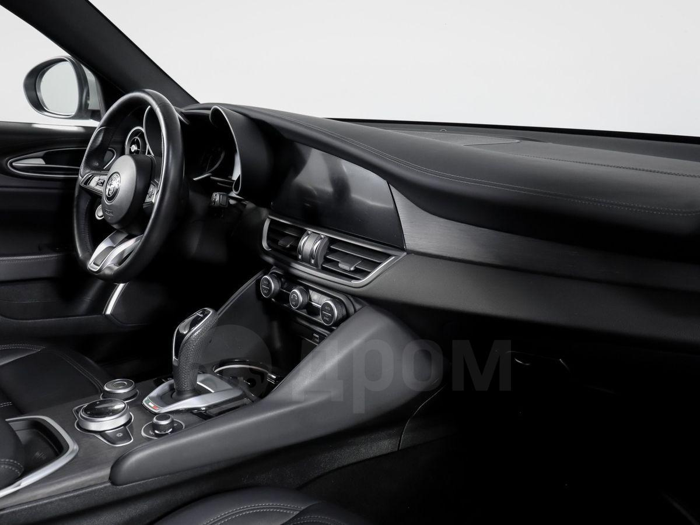
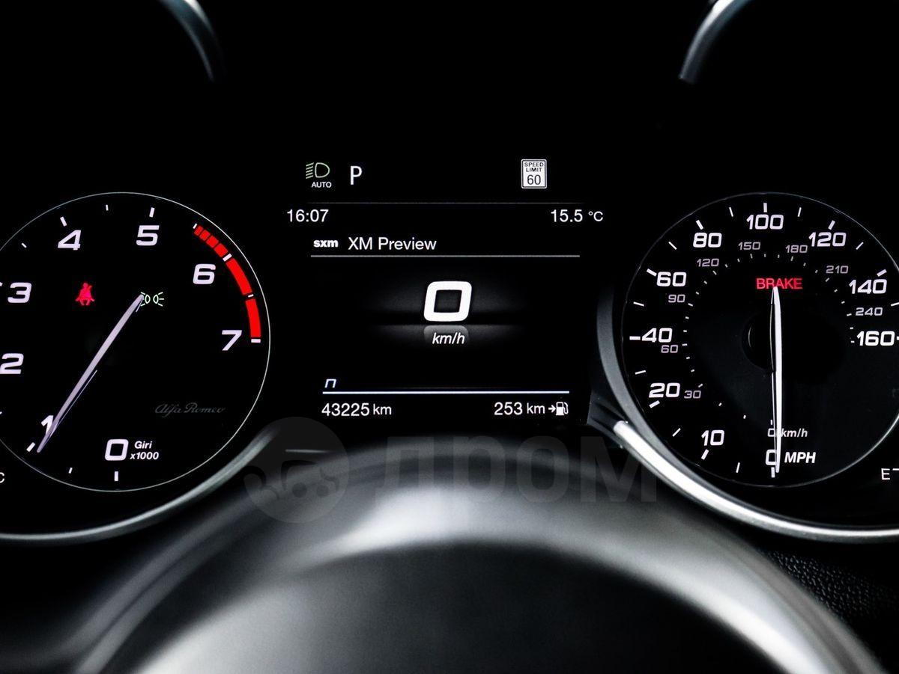
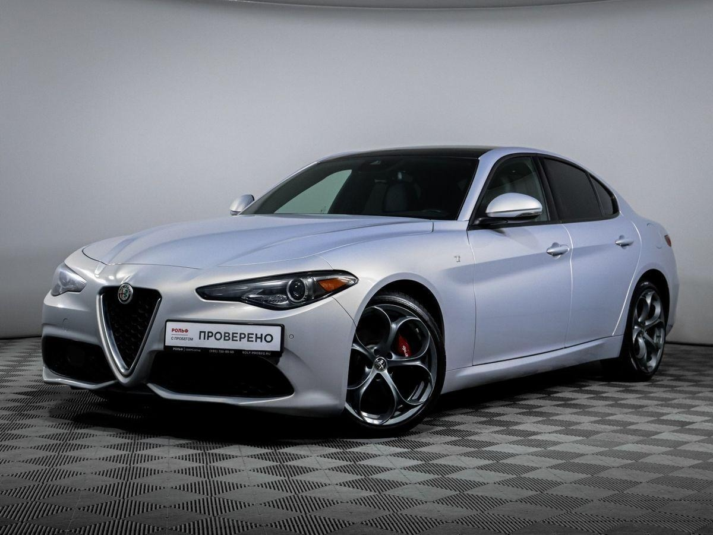
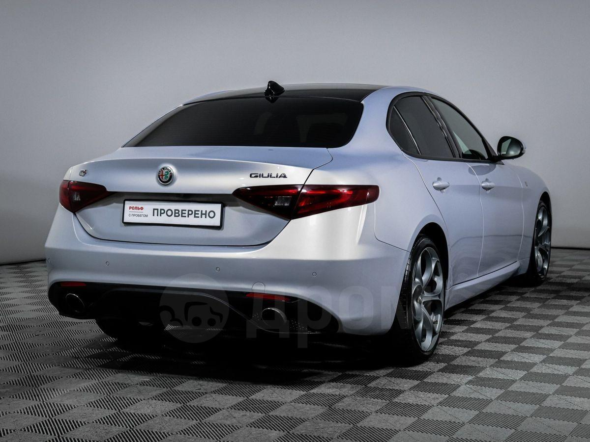
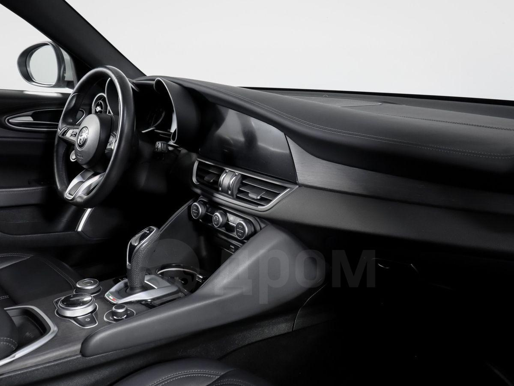
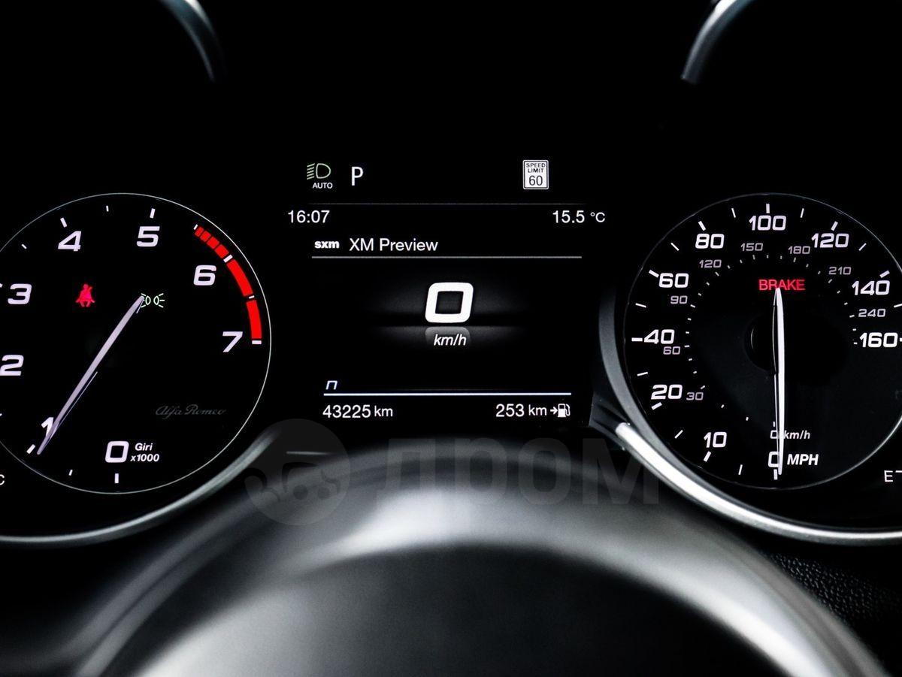

Alfa Romeo Giulia (2021)
 







3 480 000 ₽
Описание
Невероятно стильный итальянский седан. Автомобиль для тех, кто любит водить: идеальная развесовка 50:50, острая рулежка и взрывной характер двигателя.
Премиальные материалы отделки, фирменные диски-телефоны и харизма, которой нет у конкурентов.
Характеристики
- Год: 2021
- Пробег: 42 000 км
- Привод: Полный (Q4)
- Двигатель: 2.0 л Турбо / 280 л.с.
- КПП: Автомат (ZF 8ст)